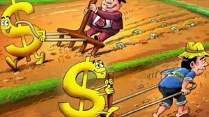
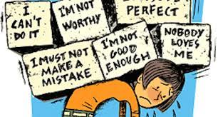

1. Awkward but isn't it true that whatvr we may eat ,how rich nor how poor,how tasty, how miserable it all comes down the same way as every food ever for a human in the next day morning 🙄(no matter how good things go(start),they all end up bad(death eventually))
2. Bad habits ,people who say they oly do a little of it ... (Shit is shit no matter how little or big it is...sry)
3.Girls are vulnerable ,boys misuse ..no two ways about it (*FACTS*)
4. (once you know this you won't be normal)Dopamine, testosterone, oxytocin, norepinephrine, and phenylethylamine all work together to create a feedback loop of love
5.dont listen to unknown quotes ,it is just new trend not the real fact in the end !for reference
Politics
We all know in general about how politics revolve around the world
but what happend in India,TN was the peak of everything(fun oriented)
Fun Fact
Nothing is ever tooooo dumb for life
Cos we literally just pay to see other human beings (movies,airplane tickets,through specs,heck even prostitution)
Fun Facts are pretty random to pop out of nowhere
even when we are enduring hardships and struggles in our life. Say, like how you come across random ads while watching TV
or playing Ad implied games etc or like the ad that has popped right below this Text
And just like the above ad, you must ignore those fun facts that hurt or disturb you,
or should use it for the very sake of it!! Fun and drop ladies and gentlemen.
As i said earlier perspective matters, yet another example image for you down below, but this time watch closely(tilt phone upside down)
Did you find the trick??, hope you did!
just like the above image, life sometimes may seem hard and unruly no matter
which direction or way of approach you may make and take
At those times, you must not fade away rather bounce back and say "is that all you've got?!!(reference:Thor,avengers")
Dont shout, i can hear your, "HOW!!"
that is life, figuring it out is your adventure but if you wana drop dead as a weakling(unlike Thor) you always have a choice mate
if you cant approach it anyway, then let it slide, flow, crash
And once you get the slightest hint, go at it!!, crash it back!!, harder and twice as it did.
Toxic Relationship
Toxic relationships are at times just "One-sided relationships"
-How to Move Forward in a One-sided Relationship
If you feel that you're in an imbalanced relationship, Campbell suggests documenting your time and making a concrete list of observations.
If after making these observations, you feel that things are one-sided, you need to communicate your feelings with your partner who otherwise won't know that a problem exists.and if it still pertains cut ties with the partner
However, initiating change can be the hardest part of navigating a one-sided relationship. "The problem with one-sided relationships is that often it is just one partner initiating these 'talks' because being in what we call an over-benefitted situation (getting more out of a relationship than you are putting in) can be quite comfortable," Campbell explains. "So your partner may not respond favorably to the complaint."
In fact, "researchers call this pattern 'demand-withdrawal,' which involves one partner is initiating a discussion or requesting a change and the other withdrawing from the conversation and avoiding discussion," she elaborates.1 It's a very unhealthy and a common pattern in one-sided relationships. "If the over-benefitted cares about the other's well-being, they will seek to improve the balance and take on more of the work or put in more effort," says Campbell.
"If a partner does not change after being made aware of the imbalance, the partnership might not be a good fit and the under-benefitted person should consider moving on," she adds.
Money philosophy

Explaination
The point about the animation is this. There are two individuals, apparently doing likewise work.
One looks glad and the other is extremely pitiful. One is doing things the most difficult way possible, and one is doing things the simple way.
Smart way
The simple route is to work first. Get some cash. Everyone needs to bring in cash, and except if you acquired it, a great many people need to work.
Nonetheless, when you are acquiring, begin bringing in your cash work for you, instead of zeroing in on working for cash.
Betterment of Society or Surrounding
It can get going little from the outset. Two or three hundred dollars or pounds to a great extent.
In the event that you start soon enough, you can collect a tremendous pot of cash at retirement.
There are alternate approaches to bring in cash work for you also, remembering contributing for appreciating and income creating resources.
The fact of the matter is, in the event that you buckle down for cash, however spend that cash on things that will go down in esteem and won't ever deliver income,
you will consistently be once again at the starting point.
Know Better
That doesn't mean paid and difficult work is terrible. It gives individuals reason.
No one can tell when your wellbeing will go however.
So when you can begin reinvesting cash from that work, into future income, the sooner you have more alternatives
Truth bomb alert!
TRUTH
If u like somone ,ull exaggerate them in ur mind
If u dislike someone ,ull still exaggerate them in ur mind
If u exaggerate ,it means ur unable to see them as they are ,
U can never handle life the way it should be ..
BELIEF
Now...I have to be grateful to somone for the good things that happend and would happen to me in future
Thus I believe in Jesus and am grateful to him
So that I don't feel guilty under my own judgement and conscience
SELF WORTH

You put down yourself too much sometimes that you sacredly believe that
you'd just die for somone who is better(lol due to low self esteem)
Your body isn't yours
It's prolly ur parents' (if u don't believe in God)
Or it's ur creator's(ur God)
So if u wana die for your friends sake and ur tht pure of it ...
Then u might as well take ur body and soul as ur other friend who deserves ur attention too..
Don't treat it like u own it and it's u.. it ain't u if u don't look after it like u should ..
It isn't selfish.. it's taking care of tht body and soul given to u.. just like a friend
So, DEEP breath and know that you are worthy of yourself.